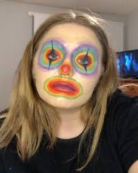

Teens Mad at TikTok’s New Clown Video Filter for Making Them Ugly
By Daniel Stinchomb
Students across America are protesting a recent TikTok update that they say makes them look ugly, according to published citizen journalists on Twitter. About 1000 people gathered in downtown Sacramento, California last weekend.
"They should revert to the old filter,” said Joey Rebozo, one of the protesters, holding a sign from the top of a car. “I am losing followers and getting hate comments."
One of the 300 observers said he was just there to watch how this would turn out, such a huge protest from such a tiny technological change. "This is so stupid all these kids and young adults getting mad at a dumb filter,” said Ezekiel Schmidt. “It’s just a stupid app that’s taking up everyone's time what's it going to do to someone’s everyday life, make them feel bad?"
The impact of the clown filter on body image is one more example of social media’s negative effects on teenagers documented in "Facebook Knows Instagram Is Toxic for Teen Girls" (Wall Street Journal) said that when they felt bad about their bodies, Instagram made them feel worse.
Researchers who studied data on more than 10,000 adolescents found frequent social media use disproportionately affects teen girls’ mental health more negatively than that of teen boys. While this may seem like a side effect of a generation addicted to their phones, the answer isn’t as simple as logging off.
Natasha Varela from Northwestern University says that social media is affecting girls' mental health in a bad way more than it affects boys. Some people think this is an easy fix but the answer to fix this isn't as easy as logging off the app...or disabling the filter.